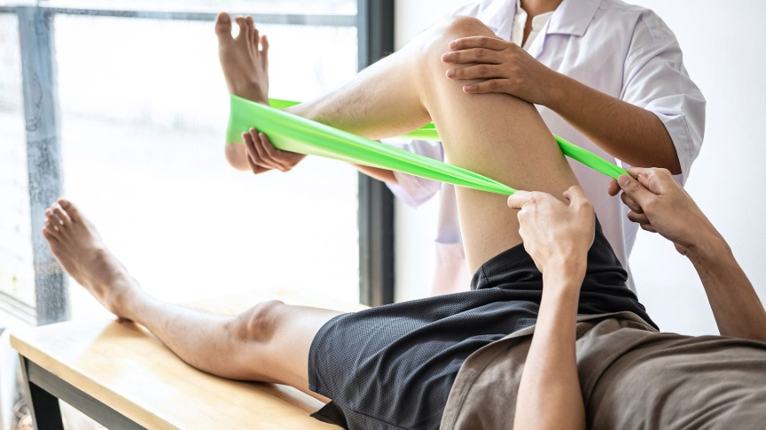
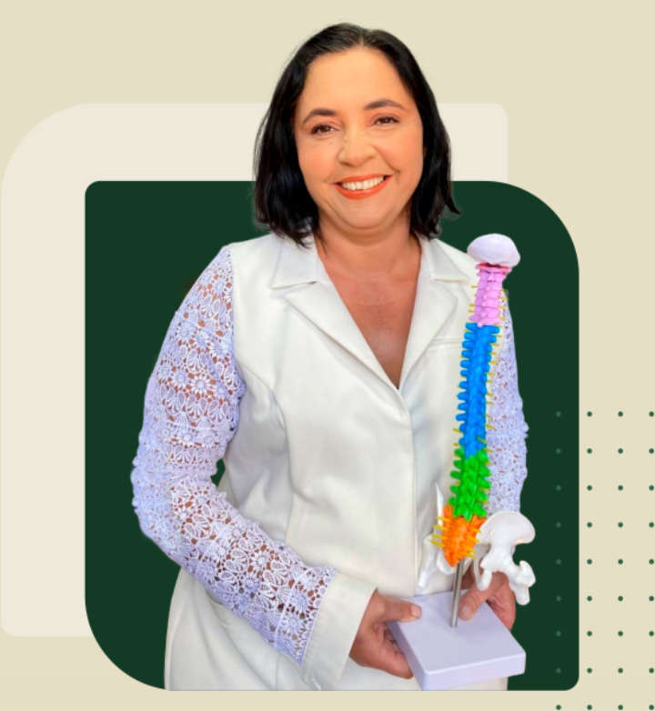

Programa de Tratamento
Após uma avaliação minuciosa do paciente, é criado um programa de tratamento para atender exatamente as suas necessidades.
Fisioterapia especializada em coluna
Tratamento personalizado para hérnia de disco, dor no ciático e dor lombar em Novo Hamburgo. Avaliação minuciosa, programa feito para o seu corpo e resultados que você sente desde as primeiras sessões.


Quem cuida de você
À frente da Nina Fisioterapia, em Novo Hamburgo, a Dra. Noemi é especialista no tratamento de hérnia de disco e nas dores que vêm junto com ela: o ciático que queima, a lombar que trava, a dormência que sobe pelos braços.
O trabalho começa por uma avaliação minuciosa, para entender de onde a dor vem, e não apenas onde ela aparece. A partir daí é montado um programa de tratamento individual, combinando terapia manual, quiropraxia, pilates e acupuntura conforme a necessidade de cada corpo.
O que fazemos
Técnicas que se combinam dentro de um único programa, montado depois de avaliar você.
Após uma avaliação minuciosa do paciente, é criado um programa de tratamento para atender exatamente as suas necessidades.
Exercícios baseados em neurociência do movimento, buscando reequilíbrio neuromuscular. Realizados no solo, com acessórios ou equipamentos, visando o completo controle e a conexão entre corpo e mente.
Técnica que pode ser realizada em qualquer articulação, sempre respeitando a individualidade anatômica de cada paciente.
Especialista em tratamento de hérnia de disco, com resultados desde a primeira sessão, sem remédio e sem cirurgia, com resultados duradouros.
Falar sobre o meu caso →Com pressão, ritmo e manobras exclusivas, oferece resultados mais expressivos e rápidos na redução do inchaço e na ativação da circulação sanguínea, linfática e do sistema imunológico, eliminando toxinas e trazendo sensação de leveza, relaxamento e melhora do contorno corporal.
Modalidade terapêutica desenvolvida na China há mais de 5.000 anos. Muito eficaz no tratamento das dores, também auxilia em patologias do sistema musculoesquelético, doenças neurológicas, respiratórias e gastrointestinais.
Tratamento complementar e não invasivo para as labirintopatias, com técnicas como a reposição dos cristais que causam tontura, além de exercícios personalizados, orientação de hábitos de vida e alimentação.
Conte o que você está sentindo. A partir daí definimos juntas o melhor caminho.
Conversar no WhatsAppComo funciona
Conta em poucas linhas o que está sentindo e há quanto tempo. Já saímos dali com o seu horário marcado.
Testes, história clínica e exames, se você tiver. O objetivo é achar a origem da dor, e não só o lugar onde ela aparece.
Terapia manual, quiropraxia, pilates, acupuntura ou reabilitação vestibular: a combinação certa para o seu corpo.
A cada sessão o programa é reajustado, com orientações para você manter o resultado em casa e no trabalho.
A clínica
Salas equipadas para terapia manual, pilates com aparelhos e recursos de fisioterapia, em um ambiente calmo e reservado.
Depoimentos em vídeo
Pacientes da clínica contando, com as próprias palavras, o que sentiam antes e como estão agora.
Dúvidas frequentes
Ficou alguma pergunta que não está aqui? Chame no WhatsApp: quem responde é a nossa equipe, não um robô.
Tirar minha dúvidaO atendimento é 100% particular. É essa escolha que permite dedicar a sessão inteira a uma única paciente, com avaliação detalhada e um programa individual, um nível de cuidado que o volume dos convênios não comporta. Formas de pagamento e valores a gente combina pelo WhatsApp.
No tratamento de hérnia de disco é comum haver alívio já na primeira sessão. O número total varia conforme o tempo de dor e a resposta de cada corpo, e isso fica claro logo após a avaliação.
Não é obrigatório para começar. Se você já tem ressonância, raio-x ou laudo, traga: ajuda a montar o programa mais rápido.
As técnicas respeitam o seu limite e a anatomia de cada articulação. A proposta é sair da sessão com mais alívio do que entrou, e nada é feito sem o seu consentimento durante o atendimento.
Os valores dependem do programa definido na avaliação. Chame no WhatsApp que passamos tudo direitinho, sem compromisso.
Na R. Cel. Jacob Kroeff Filho, 1786, bairro Rondônia, em Novo Hamburgo/RS (CEP 93415-580). Atendemos de segunda a sexta, das 8h às 18h, e aos sábados das 8h às 12h. Também recebemos pacientes das cidades vizinhas do Vale dos Sinos e da Grande Porto Alegre. Ver no mapa.
Agende sua avaliação e descubra o que está por trás dela.
Falar com a Nina Fisioterapia